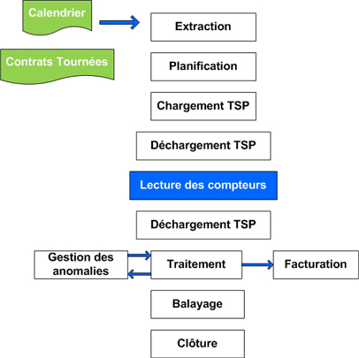

الأسئلة الأكثر تداولا
الربط
1. ما هي أسس تكلفة الربط ؟
يتكون تقدير الربط بشكل عام من عنوانين رئيسيين :
- سعر تكلفة اللوازم والأشغال بالإضافة إلى العقوبات والرعاية التي تغطي النفقات العامة (الدراسة والسفر ثم العمل ... إلخ).
- المشاركة في البنية التحتية الأساسية القائمة وربما تكاليف تمديد الشبكة إن أمكن.
2. ما هو وقت إتمام الربط؟
تلتزم راديما بما يلي:
- إنشاء وإرسال عرض الأسعار المقابل في غضون 7 أيام عمل ، إذا تم استيفاء جميع الشروط المطلوبة (انظر القائمة: جهة الربط الأولى)
- قم بعمل التوصيل في غضون 15 يومًا بعد دفع التقدير إلا في حالات القوة القاهرة.
3. من هو صاحب الربط؟
يعتبر الربط جزءًا لا يتجزأ من شبكة التوزيع العامة ، والتي تحتفظ بها راديما .
4. لماذا تتطلب راديما تصريح إقامة للاشتراك في اشتراك الكهرباء؟
يشترط توفير تصريح إقامة وفقاً لأحكام القانون
5. اختيار موقع العداد؟
بشكل عام ، يجب اختيار موقع العداد بحيث يكون في متناول وكلاء راديما ، من
الشارع العام وفي جميع الأوقات.
يمكن وضعها على حافة مكان الإقامة ، إما :
- في مقدمة منزلك
- على الحائط الختامي لمكانك لتقديمه
- في نظرة مدفونة ، عندما تكون عيار كبير
6. هل تقوم راديما بتنفيذ أعمال التوصيل بالضرورة؟
لأسباب تتعلق بجودة وتوافق الأعمال ، يتم إجراء الربطات حصريًا بواسطة راديما
.
في حالات معينة ، يمكن تنفيذ أعمال التوصيل من قبل شركة معتمدة من راديما
وبعد موافقتها.
7. من المسؤول عن ترميم المبنى بعد إجراء التوصيل؟
يتم ترميم المباني تحت سيطرة راديما ، من قبل الطرف الذي قام بالربط.
اشتراك
1. ما هي الإجراءات الشكلية اللازمة لمنحي اشتراك في المياه و / أو الكهرباء؟
لمنحك اشتراكًا في المياه أو الكهرباء ، يجب عليك أولاً الربط بشبكات التوزيع ، وإلا يجب عليك إنشاء طلب اتصال (انظر القائمة: جهة الربط الأولى).
2. متى سأحصل على الماء و / أو الكهرباء؟
في حالة وجود اتصال موجود وبعد دفع تكاليف الاشتراك ، تتعهد راديما بتثبيت العداد في غضون يومي عمل كحد أقصى.
3. ما هو الاشتراك
الاشتراك عبارة عن مركز ربط يربط الإدارة بعملائها ويحدد شروط الإمداد بالمياه
والكهرباء وكذلك حقوق والتزامات الطرفين.
ملحوظة :يتضمن عقد مياه الشرب أيضًا البنود المتعلقة بخدمة الصرف
الصحي السائلة.
4. في أي الحالات يجب علي توقيع عقد اشتراك جديد؟
في الحالات التالية :
- تغيير عنوان الخدمة
- تغيير مقياس العداد
- تغيير في نوع الاستخدام
- التجديد بعد الإنهاء
5. اختيار موقع العداد؟
♦ تُمنح الاشتراكات المؤقتة فقط للشركات بعد طلب خطي وبعد موافقة الإدارة
العامة.
♦ يجب أن تكون هذه الاشتراكات خاضعة لعقد اشتراك بين الطرفين لمدة أقصاها
سنة واحدة. يُمنح تجديد هذه الاشتراكات فقط للمواقع التي لم تكتمل ، وبناءً على
طلب المشترك لمدة أقصاها سنة واحدة وبعد موافقة الإدارة العامة.
الاستهلاك
النقاط الرئيسية لاستهلاك المياه
- تدفق: من 10 إلى 12 لترًا
- الحمام: من 60 إلى 80 لترًا
- حمام: من 150 إلى 200 لتر
- غسالة: من 70 الى 120 لتر
- غسالة الصحون: 25 إلى 40 لترًا
- غسل سيارتك: حوالي 200 لتر
- سقي الحديقة: من 15 إلى 20 لتر / متر مربع
في حالة النزاع: مبلغ الفاتورة.
إذا اعترضت على مبلغ الفاتورة ، مع الأخذ في الاعتبار أنها مبالغ فيها مقارنة بمتوسط الفواتير السابقة ، فأنت مدعو للاتصال بمدير حساب الوكالة التابعة لمرفقك أو الربط بمركز علاقات العملاء علىرقم 0802000123
إذا اعترضت: حسن عمل العداد.
أرسل شكوى للوكالة المرفقة الخاصة بك والتي سوف ترسل وكيلاً لملف والتحقق من وجودك في موثوقية تشغيل العداد. إذا لوحظ وجود شذوذ (عداد معيب) وتسبب في فرق بين الكمية المسجلة والمدين المخصوم أكبر من 5٪ ، فلن يتم إصدار فاتورة لك لتكاليف التحقق وسيتم استبدال العداد الخاص بك على نفقة مكتب المبيعات وسيتم دفع الفاتورة استقامة. إذا كان ذلك ممكنًا ، أي أن الفرق أقل من أو يساوي 5٪ ، فإن تكاليف التحقق ستكون مسؤوليتك.
مراقبة و تتبع الاستهلاك
1. كيف يمكنني التحكم في استهلاك المياه و / أو الكهرباء؟
للتحكم في استهلاكك ، نوصي بعمل كشف حساب شهري والتحقق من فهارس الفواتير التي
تتلقاها مع تلك العداد.
يمكن الوصول إلى أجهزة القياس مجانًا ، بحيث يمكنك التحكم في مؤشر العداد
في أي وقت ، معبراً عنه بالمتر المكعب (الماء) أو كيلوواط ساعة (الكهرباء).
ننصحك بالتحقق من استهلاكك كل شهر.
2. ما هي نصائح استهلاك أقل؟
في الماء :
- أغلق الصنابير أثناء تنظيف أسنانك وأثناء صابونك في الحمام
- لا تقم بتشغيل غسالة الأطباق نصف ممتلئة
- اغسل سيارتك باعتدال أو في غسيل سيارات عالي الضغط (الاستهلاك مقسومًا على 4 مقارنة بالغسيل اليدوي)
- اروِ حديقتك في الليل
- اضبط التدفق وقم بإصلاحه حتى عند وجود تسرب صغير
- قم بإصلاح الحنفيات عندما لا تغلق تمامًا
- للتنظيف ، يجب استخدام المكنسة مع تدفق المياه
- لغسل كمية صغيرة من الغسيل في الغسالة ، عليك التفكير في البرنامج الاقتصادي
- في حالة من الغياب لفترات طويلة ، اتخذ الاحتياطات اللازمة لعزل التثبيت الخاص بك عن طريق إغلاق الصنبور بعد العداد
في الكهرباء:
- تحكم في ترموستات سخان المياه ، وسخان كهربائي ، وفرن ، وما إلى ذلك.
- استخدم مصابيح الإضاءة الموفرة للطاقة
- تحقق مما إذا كان المقياس لا يعمل فارغًا
- تذكر إطفاء الضوء عندما لا تحتاجه بعد الآن
- اترك سخان الماء قيد التشغيل باستمرار إذا كنت تستخدمه والتحكم في الترموستات ودرجة الحرارة المطلوبة
- تأكد العزل الحراري لسخان المياه الخاص بك. في حالة الغياب لفترات طويلة ، افصل
3. كيف يمكنني معرفة متوسط استهلاكي؟
لمعرفة متوسط استهلاكك ، ما عليك سوى طلب بيان استهلاك من وكالتك المعتادة.
إن مديري الحسابات لدينا تحت تصرفك لتسهيل قراءة هذا المستند: فترات
(فترات) الفوترة ، ومؤشر قراءة التاريخ وعداد البيانات.
4. أنا أعيش في منزل صغير ، لماذا أدفع أعلى فاتورة في الجوار؟
يرتبط استهلاك الفواتير (الماء أو الكهرباء) بالاستهلاك الفعلي ، بغض النظر عن نوع منزلك. يعتمد الاستهلاك على مستوى المعدات في منزلك والأشخاص الذين يعيشون فيه (عدد الأشخاص أو العائلات الذين يعيشون في نفس المنزل).
5. هل يجب أن أستأجر أو أشتري جهاز القياس؟
عداد المياه أو الكهرباء ملك لـ راديما ؛ يمكنك استئجاره فقط مقابل رسوم إيجار
شهرية.
يتم توفيرها ومعايرتها وتثبيتها
بواسطة خدماتنا الفنية على الربط الأصلي للتركيب الداخلي الخاص بك (في صندوق
أو عطلة متر).
تضمن الوكالة صيانتها
واستبدالها في حالة الفشل في إطار الاستخدام العادي. يتم تحديد مقياس العداد من
خلال خدماتنا التقنية على أساس حاجتك.
6. كم يستهلك صنبور أو تسرب مرحاض؟
- الصنبور: تيار مائي حوالي 130.000 لتر في السنة! أو 130 م 3 (أو أكثر من 1500 درهم).
- تدفق أو تواليت A يستهلك التدفق المتسرب بين 45 م 3 (45000 لتر) و 220 م 3 (220.000 لتر) من ماء في السنة! (500 إلى 3000 درهم).
تذكير : غسيل سيارة 200 لتر! حمام 200 لتر! الاستحمام ما بين 60 و 80 لترًا! أواني يدوية 20 لتر! المرحاض مغسلة 5 لتر! المطبخ من 5 الى 8 لترات! غسالة صحون 40 لتر!
7. لماذا أستلم فاتورة بدون استهلاك؟
فاتورة بدون استهلاك مستحقة إما:
- عندما يتعذر الوصول إلى جهاز القياس
- عندما يتوقف جهاز القياس (محظور)
- به خطأ في القراءة
8. هل معايرة العداد مجانية؟ لمن وكيف يجب أن أقدم طلبي؟
في وكالاتنا ، يتوفر مديرو الحسابات لدينا لتقديم المشورة لك في حالة وجود نزاع
حول تشغيل جهاز القياس (عداد المياه والكهرباء).
بشكل عام ، يحق للعميل
طلب التحقق من دقة الاستهلاك التي سجلها جهاز القياس في أي وقت.
ومع ذلك ،
لن تتحمل راديما تكاليف التحقق (المعايرة) إلا في الحالة التي يتحول فيها
العداد إلى عيب (انظر السؤال 2 في قائمة الاستهلاك).
تذكير: عداداتنا كلها من طراز معتمد وموثوق
للغاية.
9. لماذا يجب أن أدفع تكاليف العداد المكسور بينما لا أملكه وكان فنيوكم هم الذين وضعوه في مقدمة منزلي؟
عندما يتم وضع التثبيت في الخدمة ، يتم توفير العداد وتثبيته بواسطة راديما في صندوق العداد أو مكانه. هذا لحمايته. لذلك تقع على عاتقك مسؤولية ضمان حماية جهاز العد بشكل صحيح.
10. لماذا يتم تغيير العدادات دون سابق إنذار؟
كجزء من التزاماتها التعاقدية ، يجب أن تحتفظ راديما بتركيباتها وأجهزة القياس
في حالة عمل جيدة. كما أنها مدعوة لاستبدال أجهزة العد التي ثبت أنها معيبة ،
ولا سيما العدادات المسنة والمسنة وغير المقروءة وما إلى ذلك.
تترك بطاقة
اتصال في الموقع لإبلاغك باستبدال العداد.
11. هل يجب علي تركيب العداد بنفسي؟
لا يمكن تثبيت العداد إلا من قبل وكلائنا بعد التحقق من التركيبات الداخلية الخاصة بك وامتثالها للمعايير الحالية.
12. ما هي مسؤوليتي تجاه جهاز القياس (عداد المياه والكهرباء)؟
يبقى العداد ملكًا راديما التي تضمن صيانته أو استبداله في ظروف الاستخدام
العادية.
ومع ذلك ، فأنت مسؤول عن جهاز القياس الخاص بك ، وبالتالي ، يجب عليك اتخاذ جميع التدابير لحمايته. في حالة التدهور بشكل مستقل عن الاستخدام العادي للعداد ؛ ستتم محاسبتك على إصلاح العداد أو استبداله.
13. موقع عداد المياه (غمر) مغمور ، فماذا أفعل؟
هناك سببان محتملان :
- إما حدث تسلل إلى مياه الأمطار أو تسرب المياه الجوفية. إذا كان هذا أمرًا استثنائيًا: أفرغ الحاوية بحاوية أو مضخة. إذا كان هذا الموقف متكررا ؛ ادرس مع خدماتنا موقع جديد للمتر.
- إما أن هناك تسرب. يمكن تحديد موقع هذا التسرب قبل العداد أو بعده. تحقق من موضع التسرب بعد تصريف زجاج الرؤية. إذا كان التسرب قبل العداد ، فسوف نتدخل مجانًا بناءً على طلب بسيط منك (جزء مكتوب أو عبر الهاتف). إذا كان التسرب بعد العداد ، فاتصل بالسباك الذي تختاره في أقرب وقت ممكن.
تذكير : للحصول على أي معلومات أو شكوى ، يرجى الربط بمركز علاقات العملاء في راديما على الرقم التالي: 0802000123.
التسريبات
1. لدي تسرب للمياه ، فماذا أفعل؟
تأكد من أنه تسرب وليس استهلاك كثيف.
- إذا كان التسرب كبيرًا ولم يتحول عداد المياه ، فهو موجود على شبكة راديما: لا تقلق ، تتولى راديما عملية الإصلاح العاجل لهذا التسرب ، يُرجى الربط على 080 2000 123 .
- إذا كان التسرب مرئيًا والعداد يعمل. اتصل بالسباك الذي تختاره في أقرب وقت ممكن. أثناء انتظار زيارته ، أغلق الصنبور بعد جهاز القياس لعزل التثبيت ، وبالتالي أوقف تسرب المياه.
- إذا كان التسرب غير مرئي: قبل الذهاب إلى الفراش ، أغلق جميع الصنابير في التركيب (ولا تستخدم المزيد من الماء) ، ثم ارفع مؤشر جهاز القياس. عندما تستيقظ ، تحقق من إصبع السبابة مرة أخرى قبل استخدام الماء. إذا تغير الفهرس ، فهناك تسرب للمياه في التركيب الخاص بك بعد العداد.
2. لاحظت تسرباً في الشارع وقبو و / أو متجري معرضين لخطر الفيضان ، فماذا أفعل؟
إن الموظفين المؤهلين تحت تصرفك ، لذلك لا تتردد في الإبلاغ عن أي حالات شاذة
تم العثور عليها في شبكات المياه والصرف الصحي
والكهرباء لهم.
كن محددًا جدًا بشأن موقع الحادث (الشارع ، رقم الشارع ،
العقار السكني ، المبنى ، الحي ، إلخ) ، سيؤدي
ذلك إلى تحسين وقت الاستجابة لفرقنا.
بمجرد تسجيل مكالمتك ، سينتقل فريق
بسرعة في الموقع لدراسة الوضع (التشخيص) واتخاذ
التدابير اللازمة.
3. ليس لدي أي جهاز متصل ولا يزال عداد الكهرباء قيد التشغيل!
ندعوك إلى الربط بفني كهربائي لتحديد جهة الربط (جهات الربط) السيئة لديك
مع التثبيت الداخلي الخاص بك.
إذا كانت التركيبات الكهربائية قديمة جدًا ،
نوصيك أيضًا بتأريض جميع منافذ الكهرباء وتثبيت جهاز تيار متبقي في اتجاه
التثبيت الداخلي. تم الكشف عن أخطاء العزل في هذه الحالة بواسطة قاطع الدائرة
الكهربائية.
4. في حالة حدوث تسرب في التركيب الداخلي ، لماذا يجب علي دفع ثمن كمية من الماء لم أستهلكها؟
حجم الفاتورة هو ذلك المسجل بواسطة جهاز القياس.
أيضًا ، ننصحك بالتحقق
بانتظام من الحجم المسجل بواسطة عداد المياه الخاص بك من أجل الكشف ، في الوقت
المناسب ، عن تسرب محتمل في التركيب الداخلي الخاص بك.
بيان
كيف تتم قراءة الفهرس؟
يقوم وكلاء غرفة التحكم بقراءة مؤشر عدادات الماء والكهرباء (بالمتر المكعب أو
الكيلوواط ساعة) شهريًا وبشكل منتظم.
يسمح مرورهم ، بالإضافة إلى قراءة
العداد ، بملاحظة الحالات الشاذة التي تم اكتشافها على الربط (بما في ذلك
العداد) وإبلاغهم بخدمة الفواتير وإبلاغ الزبون أيضًا.
الحالات المحتملة :
- إشعار الاستهلاك العالي:
- إشعار لمقياس يتعذر الوصول إليه :
في أي الحالات نقوم بتقدير استهلاكي؟
كلما تعذّر قراءة مؤشر العداد بشكل طبيعي (توقف العداد أو حظره ، أو غير مقروء
، أو يتعذر الوصول إليه ، أو كسر الساعة ، أو الاحتيال ، وما إلى ذلك).
يتم تحديد تقدير الحجم المستهلك ، على أساس متوسط الاستهلاك لنفس الفترة من
السنة السابقة لتلك الفترة التي يكون فيها تقدير الاستهلاك ضروريًا بعد أحد
الأسباب المذكورة أعلاه. أعلاه ، ما لم تسمح مؤشرات أكثر دقة بتقييم التقدير
المذكور على أسس أخرى مثل تركيب عداد جديد.
سيظهر هذا التقدير في قسم
"التعديل" في الفاتورة.
في جميع الحالات ، يجب ألا يعاقبك تقدير الاستهلاك
، من حيث المبدأ ، ويجب أن يكون أقرب ما يمكن من استهلاكك الفعلي وسيأخذ في
الاعتبار النطاقات والأسعار المقابلة.
كيف أعرف إذا تم تسجيل استهلاكي أو تقديره؟
عندما يكون هذا تقديريًا ، يظل الفهرس الجديد والفهرس القديم اللذان يظهران في فاتورتك كما هما ويكتمل قسم "التعديل". على العكس من ذلك ، لن يحمل القسم المذكور أي مؤشر.
التسعير
1. أسعار بيع المياه والكهرباء ورسوم الصرف الصحي باهظة الثمن نسبياً!
تبقى الأسعار التي تطبقها راديما في متوسط الأسعار التي يتم فرضها في مدن
المملكة الأخرى. يتم تحديد هيكل التعرفة وأسعار الوحدة لبيع المياه والكهرباء
والتخلص من الصرف الصحي السائل بموجب مراسيم الوزير المنتدب لدى رئيس الوزراء
المسؤول عن الشؤون الاقتصادية والعامة ولا تدخل في نطاق: من مهارات راديما.
وتجدر الإشارة إلى أن الهياكل السعرية للمزارع الثلاث تأخذ في الاعتبار
الأسر ذات الدخل المنخفض ، وبالتالي يتم حجز شريحة اجتماعية لهذه الفئة من
العملاء المستفيدين من سعر مبيعات أقل من التكلفة.
2. ما هي المبالغ المختلفة في فاتورتي؟
يشمل السعر :
- رهان ثابت: هي أقسام "الرسوم الأبوية" في فواتير المياه والصرف الصحي السائل وإمدادات الكهرباء. على سبيل المثال ، صيانة العداد واتصاله ، تأجير العداد ،
- جزء متغير: يتناسب مع استهلاكك ، الفاتورة الجديدة التي تم تحريرها بواسطة نظام إدارة سلسلة العملاء الجديد ربط التفاصيل الدقيقة للمبلغ المستحق من العنوان.
3. هل الأسعار متشابهة في جميع مناطق المدينة؟
لنفس الاستخدام ، الأسعار هي نفسها في جميع أنحاء نطاق عمل راديما (جميع أحياء مراكش بما في ذلك ضواحي المدينة).
4. هل الأسعار متشابهة خلال جميع فصول السنة؟
أسعار المياه والكهرباء هي نفسها خلال جميع مواسم السنة ، باستثناء العملاء
الزراعيين ذوي الجهد المتوسط.
بالنسبة للأفراد (الجهد المنخفض) ، لا يوجد
فتحة زمنية.
5. هل أسعار الكهرباء 110 فولت و 220 فولت هي نفسها؟
يتم تطبيق الأسعار على استهلاكك معبرًا عنه بالكيلوواط ساعة ولا تعتمد على جهد الإمداد.
6. نحن عدة عائلات منخفضة الدخل ، نتغذى بمتر واحد ونستلم فواتير عالية!
إن استخدام متر واحد ليس في صالحك لأنه يؤدي إلى الانتقال إلى شريحة أعلى من
تلك التي تم إصدار فاتورة بها بالمعدل الاجتماعي. لذلك ننصحك بمراجعة التركيبات
الداخلية الخاصة بك ، بحيث يمكن لكل عائلة الحصول على عداد فردي خاص بها بعد
تقديم طلب بهذا المعنى ودفع رسوم الاشتراك.
لمزيد من المعلومات ، يرجى
الربط بوكالة المبيعات التي تختارها.
7. لماذا ندفع ضريبة القيمة المضافة على الرسوم وعناصر الفاتورة الأخرى؟
هو تطبيق اللوائح الضريبية المعمول بها (قانون المالية). يتم تحصيلها من قبل راديما نيابة عن الدولة (الدفع الشهري). حتى الآن ، يتم تطبيق ثلاثة معدلات لضريبة القيمة المضافة على فواتير المياه والكهرباء ومستلزمات الصرف الصحي: 7٪ و 14٪ و 20٪.
الدفع
1. ما هي طرق الدفع المختلفة؟
لتسوية فاتورتك ، لديك الخيار بين العديد من الصيغ وطرق الدفع (نقدًا أو بشيك): في أي وكالة من اختيارك ؛ بمناسبة مرور السماكة.
في وكالاتنا:- عمليات دفع متعددة الخدمات ؛ نقدًا أو بشيك
- الخصم المباشر من حسابك المصرفي أو البريدي: تتوفر المطبوعات لك في فروعنا مع إمكانية تنزيلها بالنقر فوق الزر (تنزيل). يمكن لمديري الحسابات لدينا تقديم المشورة لك بشأن الخطوات التي يجب اتباعها
- تقدم "عند الاستهلاك" ، وهو احتياطي من الأموال التي تودعها في حساب الزبون الخاص بك (الماء والكهرباء) لتجنب تعليق توريد الماء والكهرباء حتى في حالة الغياب لفترات طويلة. هذا المنتج الجديد مخصص بشكل أساسي للعملاء غير المقيمين في مراكش والمقيمين المغاربة في الخارج (RME).
أصبح من الممكن الآن دفع الفواتير في الوقت المحدد مع تجنب أوقات الانتظار بفضل مساحات خدمات قرب التسهيلات. في الواقع ، يمكنك دفع فواتير راديما بالقرب منك ، أيًا كان يوم الأسبوع وفي الوقت الذي يناسبك. للقيام بذلك ، ما عليك سوى تقديم نفسك في إحدى خدمات 36 فضاء الموجودة في مراكش بفاتورتك. بعد الدفع ، يمنحك التاجر إيصال دفع مضمون من راديما.
عن طريق الخصم المباشر:إذا كنت مسافرًا أو مشغولًا للغاية ، توفر لك راديما خدمة الخصم المباشر التلقائية ، ووضع التشغيل ، والبساطة والموثوقة لدفع فواتير الاستهلاك الخاصة بك مع راحة البال التامة. عليك فقط ملء النموذج في جميع فروع راديما أو في البنك الذي تتعامل معه.
عبر ماكينة الصراف الآلي:تجنب الرحلات وقوائم الانتظار الطويلة في الفروع ووفّر الوقت بفضل الدفع عن طريق أجهزة الصراف الآلي (ATMs): خدمة مريحة وسريعة وآمنة. 7 أيام في الأسبوع ، ليلاً ونهارًا ، يمكنك تسوية فاتورتك في بضع دقائق. تعمل خدمة الدفع عن طريق أجهزة الصراف الآلي في أجهزة الصراف الآلي لبنك الشعب و BMCE.
عبر بوابة الإنترنت راديما:هل تحتاج إلى المرونة والحرية لدفع فواتير المياه و / أو الكهرباء؟ استفد من الخدمة المتاحة في أي وقت بفضل الدفع عبر الإنترنت. أينما كنت وفي أي وقت ، ادفع فاتورتك بطريقة بسيطة وسريعة وآمنة. يمكنك دفع فاتورتك عن طريق بطاقة الائتمان مباشرة من وكالتنا عبر الإنترنت ويمكن الوصول إليها على العنوان www.radeema.ma على مدار 24 ساعة في اليوم و 7 أيام في الأسبوع. يتم ضمان أمن المعاملة وسرية المعلومات المدخلة.
2. لدي صعوبات عابرة في الدفع: هل يمكنك إعطائي جدولاً زمنيًا؟
إذا كانت فاتورتك مرتفعة بعد استهلاك استثنائي ، فمن الممكن أن تدرس مذهل مع رئيس وكالة المرفقات الخاصة بك على مدى فترة أقصاها 12 شهرًا.
نصيحة: السلفة "عند الاستهلاك" هي صيغة دفع أصلية ، فهي توفر لك خطر تعليق إمدادات المياه والكهرباء ، وقبل كل شيء يمكنك إطعامها كما يحلو لك (عندما يسمح دخلك ).
الإنهاء
وإذا كنت تريد
زيادة أو نقصان في القوة التعاقدية
أعزائي عملاء الجهد المتوسط ، من خلال اختيار قوة مشتركة قريبة من الطاقة
المطلوبة ، يمكنك تحقيق مكاسب هائلة من حيث فاتورة الاستهلاك الخاصة بك.
المستندات المطلوبة :
♦ طلب كتابي يحدد السلطة الجديدة.
وتجدر الإشارة إلى أن: طلبات زيادة السلطة يتم تلبيتها بعد التوقيع على ملحق
العقد الأولي ودفع التكاليف ذات الصلة. أما بالنسبة لطلبات خفض الطاقة ، فهي
تخضع لنفس الشروط ولكنها لا تسري إلا بعد 6 أشهر.
زيادة أو إنقاص الطاقة المركبة
سيخضع تناقص القوة وزيادةها لعقد جديد يتم إعداده وفقًا لنفس الإجراء الذي أدى إلى العقد الأولي.
حالة المشترك مزودة BTالإجراء مماثل لإجراء العقد الأول.
زيادة تدفق المياه
- طلب اتصال أو مطبوع مسبقًا للتوقيع من قبل الزبون في الوكالة المحلية
- نسخة من بطاقة التعريف
- نسخة من فاتورة المياه
- الحالة أو السجل التجاري وتفويض التوقيع للشركات
- صورة من بطاقة تعريف الممثل القانوني للشركة (المدير)
تحرك العداد الخاص بك
- طلب كتابي أو مطبوع مسبقًا للتوقيع عليه من قبل الزبون
- نسخة من بطاقة التعريف
- سند الملكية
- إذن قانوني للمالك في حالة المستأجر والنظام الأساسي أو السجل التجاري وتفويض التوقيع للشركات والأشخاص الاعتباريين
- أحدث فاتورة أو إيصال لاستهلاك المياه لدفع المياه والصرف الصحي
- ورقة متطلبات المياه م 3 / ج (عيار كبير)
- الاستثمار في البنية التحتية.
- تكاليف التمديد والربط.
- العقوبات والاهتمام بالأعمال.
قطع اتصال ممتدة MT/BT الخاصة بالمشترك
يقدم المشترك طلبًا لفصل محطة MV / LV الفرعية المملوكة من قبل المشترك للإدارة
العامة
يتلقى مقابلًا عرض سعر يحدد تكلفة العملية.
يتم بعد ذلك تحديد
موعد لبرمجة قطع الربط للمشترك عبر قسم التشغيل الكهربائي.